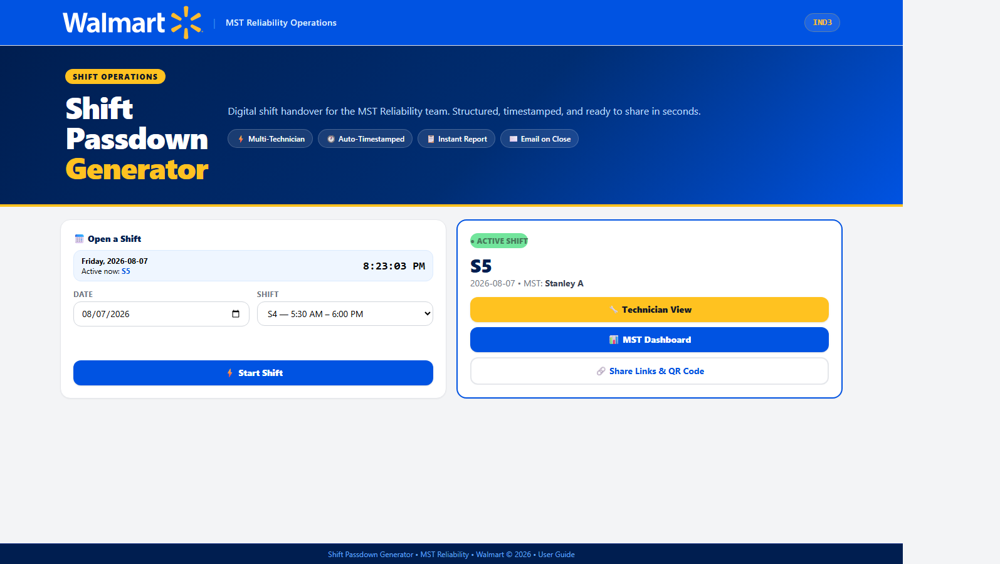
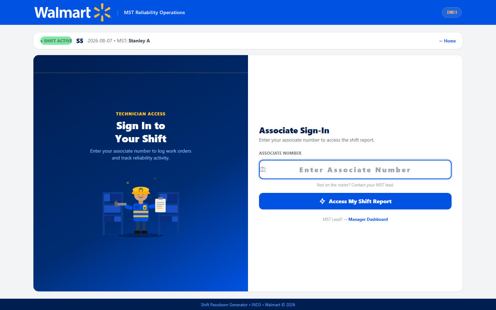
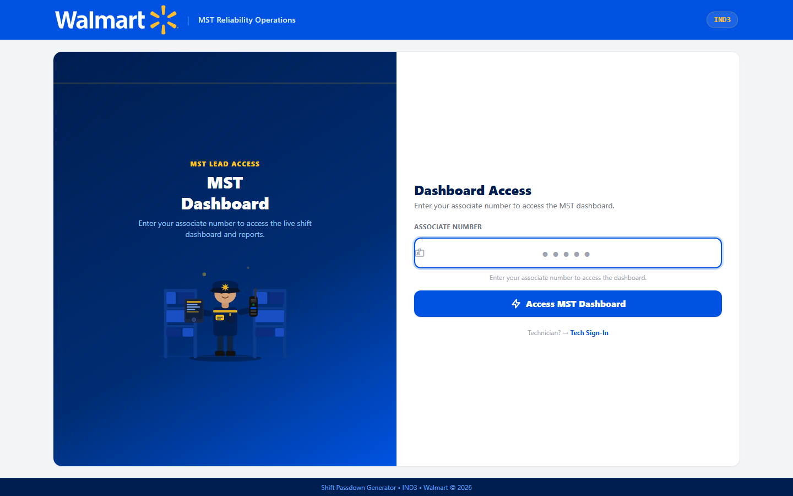
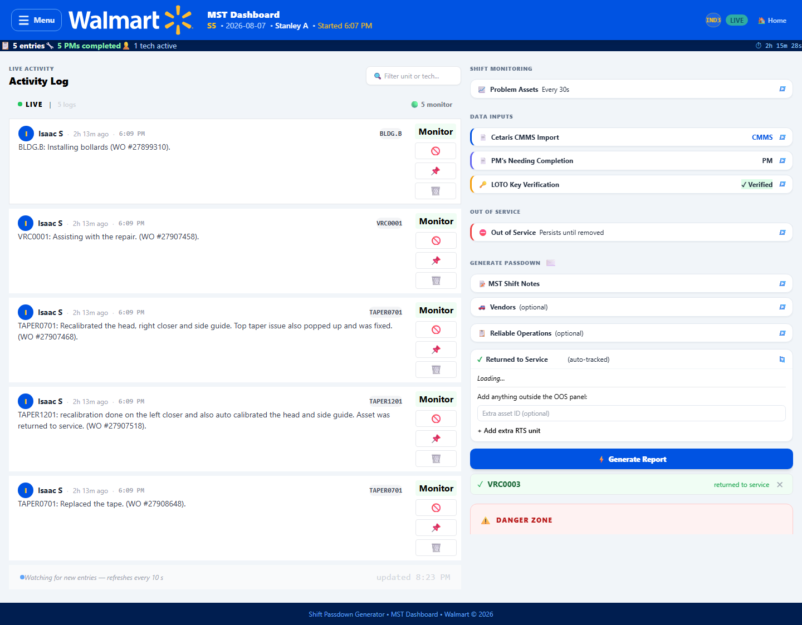
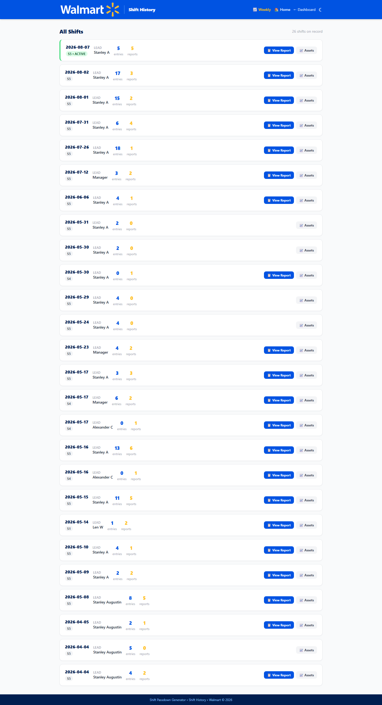
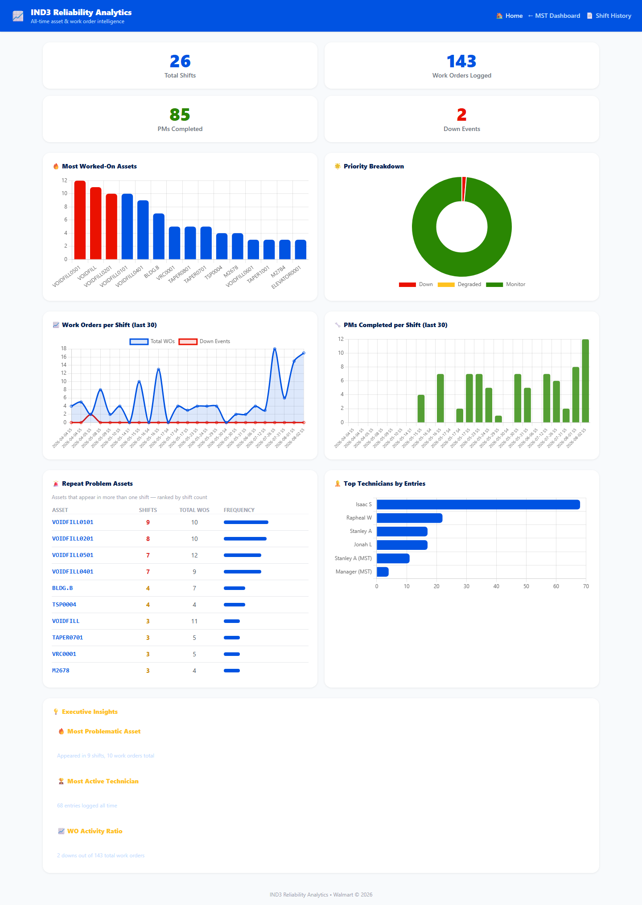
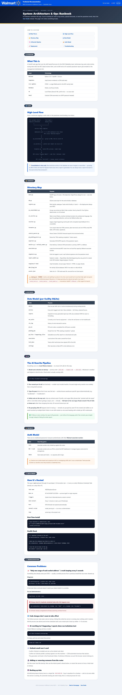

A guided tour of a full shift lifecycle: technician sign-in, the live MST dashboard, shift history, analytics, and the reference docs. Every screenshot below is captured straight from the live production app — no mockups.
Jump to a step
Everyone's entry point into the app
Whoever opens the site first each shift starts it here — pick the date and shift block, hit Start Shift. Once a shift is active, this same page shows it live for everyone else, with quick links into the Technician view, MST Dashboard, or a shareable QR code for other devices on the floor.

No passwords — just your associate number
Techs log in with their Walmart associate number — nothing to remember, nothing to reset. Once signed in, they land straight on their personal shift report where they log work orders as they go.

Associate number doubles as the MST PIN
The MST/Lead unlocks the dashboard the same way — their associate number acts as a PIN. An emergency manager code exists as a backup if a lead's number ever isn't recognized mid-shift.

The heart of the shift — everything updates in real time
This is where the MST spends the shift. Technician entries stream in live over a WebSocket as they're logged — no manual refresh needed. The right rail handles Cetaris CMMS imports, LOTO key verification, out-of-service tracking, and the one-click Generate Report button that kicks off the AI-assisted passdown writeup at shift end.

Every shift, forever, one click away
Nothing gets deleted. Every shift ever run shows up here with entry/report counts, the lead who ran it, and one-click access to the exact report that got emailed out. Useful for pulling up "what happened three weeks ago on this asset" in about five seconds.

All-time trends across every shift on record
Rolls up every shift into one view: most-worked assets, priority breakdowns, work-order and PM-completion trends over the last 30 shifts, repeat problem assets, and top technicians by entry count. Good for spotting a chronically failing asset before it becomes a bigger problem.

For techs and leads — no login required
A full end-user walkthrough lives right in the app at /guide — covering the
homepage, tech dashboard, MST dashboard, LOTO, Cetaris uploads, and the email workflow. Anyone
can open it, no login needed, and it's downloadable as a standalone HTML file too.
For whoever's on call when something breaks
A separate, lead-gated page at /tech-docs covers architecture, the data model, how
the AI rewrite pipeline works, deployment specifics, and a troubleshooting runbook for the
common failure modes we've already hit in the field (port conflicts, zombie processes, Ollama
being down, etc). The same content also lives as Markdown in the repo under docs/
for anyone editing code directly.
